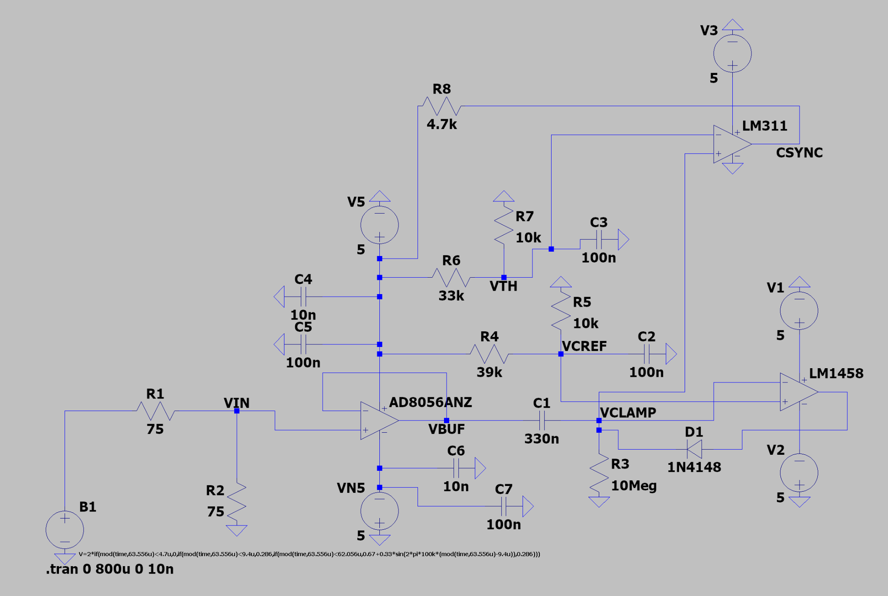
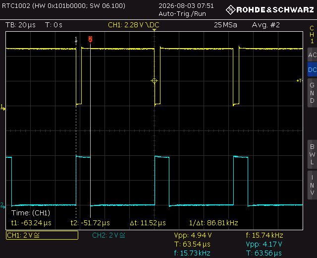
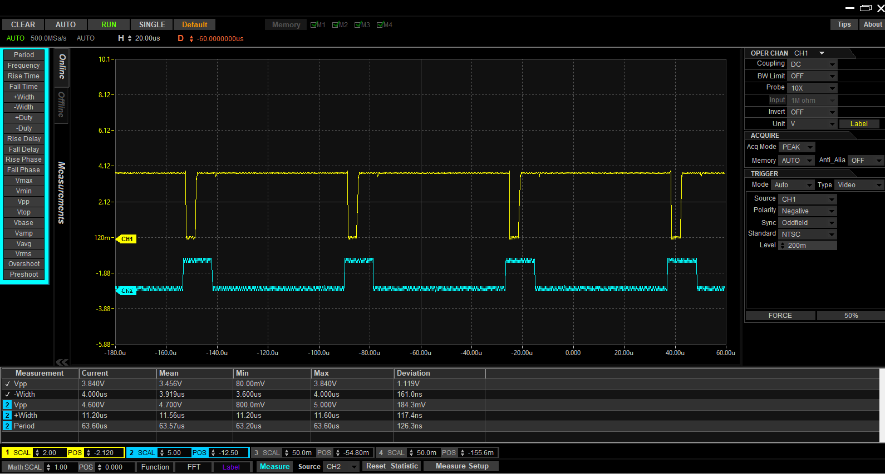
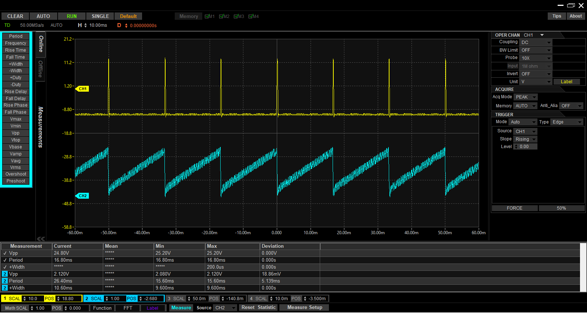

Analog circuit design
Worked on signal conditioning, timing, sweep generation and brightness-control circuitry for the video signal path.
An analog circuit project to convert a composite video input into horizontal, vertical and brightness-control signals for an oscilloscope display.

A composite video signal contains both picture information and the timing needed to draw it. The aim was to separate these components and produce signals suitable for controlling an oscilloscope display.
The design brought together input conditioning, synchronization, horizontal and vertical sweep generation, and brightness control. Simulation and bench measurements were used to examine how these stages behaved.
My work included developing circuit stages, checking waveforms and troubleshooting connections between stages.
Worked on signal conditioning, timing, sweep generation and brightness-control circuitry for the video signal path.
Used LTspice to examine signal levels, waveform shapes and timing before testing the circuit in the lab.
Inspected intermediate signals on the bench and compared their timing and shape with the expected circuit behaviour.
Tested smaller circuit sections separately to help locate timing and signal-quality issues before connecting the stages.
The circuit used ±12 V analog supplies and locally regulated ±5 V rails. I worked with 7805 and 7905 regulators, common grounding and local decoupling, with attention to supply noise between the timing circuitry and analog video stages.
Testing used controlled signals and a video input. The measurements below show horizontal timing, synchronization, blanking and sweep-ramp behaviour.



What I learned: Working through the circuit stage by stage helped me connect simulated behaviour with bench measurements and understand the importance of power supplies, grounding and signal timing during integration.
NTSC composite video · ±12 V and regulated ±5 V rails · 7805/7905 regulation · decoupling and grounding · sync separation · sweep generation · luminance processing